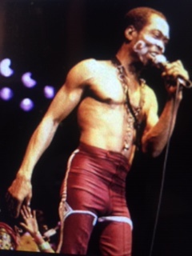

"FELA" FEATURED IN BROADWAY MUSICALS!
NEW APPRECIATION FOR FELA'S MUSICAL ARTISTRY
- His music is a complex fusion of Jazz, Funk, Congo Highlife, and Psychedelic Rock
- Afrobeats are an endless riff-based interlocking melodic groove and rhythmic sounds
- Fela's militant Afrocentric rendition of history mixed with an essence of black beauty

Click here for Fela!
FELA KUTI LIVES ON THROUGH AFROBEATS!!!
Click and listen to Fela!